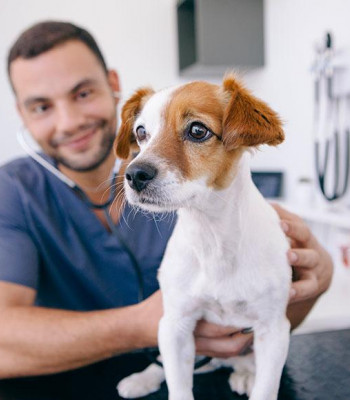
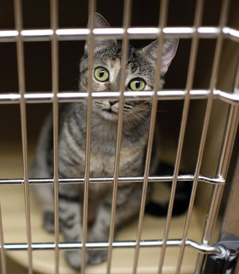
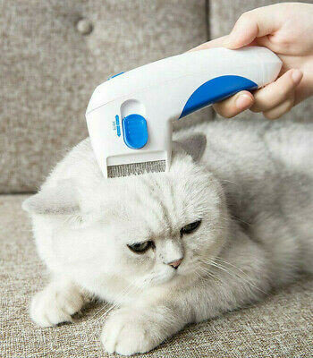

SERVICIOS

Clínica
Clínica preventiva, esterilización, aplicación de vacunas a perros y gatos y consultas con médicos especializados. ¡Agenda su cita!
Ver más >>

Adopciones
Perros y gatos acogidos por fundaciones buscan una familia. ¡Anímate a conocer a tu próximo amigo gatuno o perruno!
Ver más >>

Peluquería
Baño, SPA, artículos de belleza para tu mascota.
Ver más >>